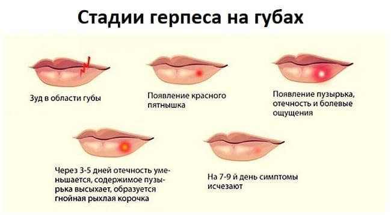
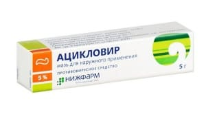
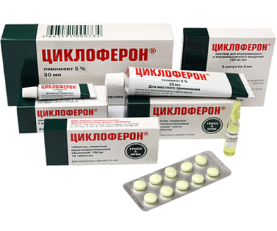

Герпетическая инфекция – это не какое-то конкретное заболевание. Это термин, объединяющий целую группу болезней и нуждающийся в определенных разъяснениях.
Вирусы, как и все другие организмы, подразделяются учеными на семейства, роды, отдельные виды. В настоящее время в живой природе обнаружено уже около 80 похожих друг на друга представителей семейства вирусов герпеса, при этом 7 из них выделены от человека.
Вирусы эти, хоть и похожи друг на друга, но вызывают заболевания весьма различные и по срокам, и по клиническим проявлениям, и по опасности для организма человека. Кстати, мы уже познакомились с тремя болезнями – совсем не похожими, но все они вызваны именно вирусами группы герпеса. Это ветряная оспа, внезапная экзантема и инфекционный мононуклеоз.
Настало время рассказать о вирусе особом, самом, пожалуй, распространенном, способном вызывать весьма разнообразные болезни, иногда смертельно опасные. Называется он «вирус простого герпеса».
По данным многочисленных исследований, вирусом простого герпеса заражены от 65 до 90 % всех жителей планеты Земля! Инфицирование происходит в детском возрасте, контактным или воздушно-капельным путем и к 6 годам около 80 % детей уже имеют в своем организме вирус герпеса.
Вирус, как ему и положено, проникает внутрь клеток и там в неактивном состоянии находится пожизненно – т. е. если заражение вирусом произошло, никакими лекарствами полностью от него избавиться не получится. Но в этом, вроде бы, и нет ничего страшного – неактивный вирус никакого особого вреда не приносит. В то же время при возникновении определенных сопутствующих условий, сопровождающихся снижением иммунитета (простуда, другая инфекционная болезнь, стресс, физическое утомление, недоедание, нехватка витаминов, травма и т. п.), вирус как бы просыпается, начинает свое черное дело и вызывает болезнь.
Одно из наиболее типичных проявлений простого герпеса – высыпания на губах, точнее на границе кожи и самой губы. В народе эти зудящие пузырьки называют просто «лихорадкой». Легко заметить, что у одних людей (детей) эти самые лихорадки встречаются часто, у других – очень часто, у третьих – не бывают никогда. Тут уж все зависит от иммунитета, от общего уровня здоровья конкретного человека.

Мы уже несколько раз писали о главном неспецифическом противовирусном белке – интерфероне. Дело в том, что на каждый вирус организм реагирует по-разному, вырабатывая определенное количество интерферона. Говоря языком ученых, каждый вирус обладает «индивидуальной интерфероногенной активностью», да простят меня читатели за сильно умные слова. Особая «вредность» вируса простого герпеса как раз и состоит в том, что он почти не стимулирует или в очень малой степени стимулирует выработку естественного интерферона. Отсюда – нестойкость и недостаточность иммунитета, частые повторы (рецидивы) заболевания.
«Лихорадка» на губах – это еще цветочки вируса простого герпеса. Проявления болезни могут быть гораздо серьезнее – поражение глаз, распространенные поражения кожи и слизистой оболочки полости рта (стоматиты), обширные высыпания на половых органах (так называемый генитальный герпес), воспаление легких и самое страшное проявление инфекции – герпетический энцефалит – тяжелейшее воспаление головного мозга с непредсказуемыми, но, как правило, весьма печальными последствиями.
1 Тяжесть любых проявлений герпетической инфекции определяется, прежде всего, состоянием иммунитета! В который раз приходится обращать внимание на тот факт, что главный способ профилактики – естественный образ жизни, обеспечивающий нормальное функционирование иммунной системы.
2 В настоящее время имеются препараты, способные избирательно подавлять размножение в человеческом организме вирусов герпеса. Самый знаменитый – ацикловир (синонимы – герпевир, виролекс, зовиракс), а его появление – такая же революция в медицине, как открытие в свое время пенициллина. Ацикловир применяют местно, для обработки высыпаний (мази, кремы, желе), проводят курсы лечения (иногда очень длительные) таблетками, при герпетических энцефалитах и других особо тяжелых вариантах болезни препарат вводят внутривенно.

3 Лечение герпетической инфекции, как правило, предусматривает использование интерферона. Не тех хорошо нам знакомых и относительно дешевых капель в нос, а дорогих и по-настоящему эффективных форм интерферона, которые вводятся в виде инъекций. Кроме этого применяют особые лекарства, многократно увеличивающие в организме выработку интерферона (циклоферон, неовир).

4 Герпетическая инфекция, и это очевидно, лечится. Полностью извести вирус, как мы уже поняли, невозможно, но забыть о его существовании – вполне реально. Главный недостаток всех без исключения способов лечения герпетической инфекции – несоответствие доходов наших соотечественников стоимости эффективных лекарственных средств.
5 Сложность лечения герпетической инфекции не только в стоимости лекарств. Лечение длительное, проводится по определенным схемам, которые учитывают и состояние иммунитета, и сопутствующие болезни, и вариант инфекции. Родителям лишь следует знать главное: «герпетические мелочи» – вроде пузырьков на губах – могут рано или поздно превратится в более серьезную проблему, а герпес не та болячка, когда самолечение может привести к успеху. Отсюда настоятельная необходимость консультации у грамотного специалиста и полноценного обследования.
Е.О.Комаровский. "Здоровье ребенка"